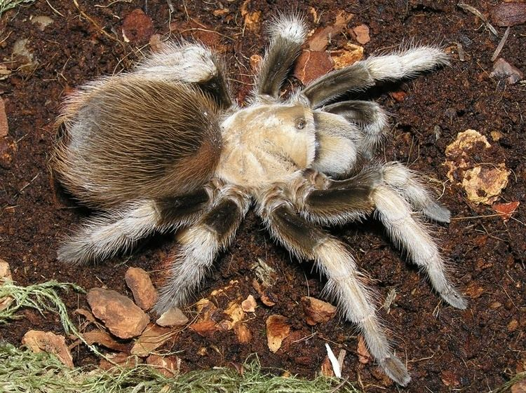

Terrestrial
All the terrestrial we have are New world tarantulas. The new world tarantulas are found in the western hemisphere including the U.S. and Mexico. New world venom is usually comparable to a bee sting, but they do have something called urticating hairs on their abdomen that they will kick when threatened. These hairs can cause itching and irritation. Usually New world tarantulas are more docile and typically slower, great if you are new to the hobby! Terrestrial tarantulas are ground dwelling tarantulas, which means they stay close to the ground and burrow regularly. Tarantula enclosures are very simple, for a terrestrial you will need an enclosure that is longer than it is tall, usually about three times the length of your tarantula. They will need a good amount of substrate so they can burrow if they want, a hide, a water dish, and moss if the species you have is more humidity dependent.
| Type | Aphonopelma Chalcodes | Brachypelma Smithi | Grammostola Pulchra | Tliltocatl Albopilosus |
|---|---|---|---|---|
| Male | 3 | 1 | 0 | 2 |
| Female | 0 | 4 | 2 | 1 |
| Unsexed | 1 | 2 | 2 | 0 |
| Price | $150 per tarantula | $200 per tarantula | $120 per tarantula | $150 per tarantula |
Aphonopelma Chalcodes
Brachypelma Smithi